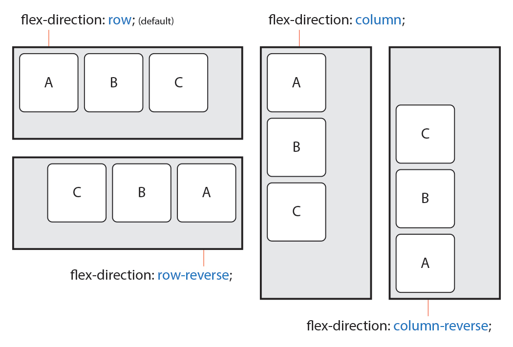

# CSS ++ <div id="copyright"></div>
## At-rules CSS에게 작동 방법을 제공하는 구문들
### `@charset` CSS에서 사용되는 문자 인코딩을 지정 ``` @charset "인코딩방식" ``` ```css @charset "UTF-8"; ``` <a href="https://www.iana.org/assignments/character-sets/character-sets.xhtml" target="_blank">더 많은 인코딩 방식 확인</a> > CSS 내 첫번째로 작성되어야 하며, 앞에 다른 문자가 선행되선 안됩니다.
### `@import` 외부 CSS 파일을 요청하고 포함 ``` @import url("경로"); ``` ```css @import url("./custom.css"); ``` > `@charset`규칙을 제외하고 모든 다른 종류의 규칙보다 선행되어야 합니다.
### `@font-face` 사용자 정의 글꼴을 로드 ``` @font-face { font-family: 글꼴이름; src: local("사용자환경글꼴"), url("글꼴경로.포멧") format("글꼴형식"); font-weight: 가중치; font-style: 기울기; unicode-range: 유니코드; } ```
| 속성 | 의미 | 기본값 | |---|---|---| | `font-family` | (필수)사용할 글꼴의 이름(임의 지정 가능) | | | `src` | (필수)원격 글꼴 파일의 위치(다중 값 가능),<br>`local`은 사용자 환경에 설치된 글꼴을 우선 검색(이름으로 검색),<br>`url`은 일반 글꼴 경로 검색(파일명으로 검색),<br>`format`은 지원 브라우저만 글꼴 검색(형식으로 검색)<br>`format` 앞에는 `,`(쉼표)를 넣지 않습니다. | | | `font-weight` | 글꼴 가중치(두께) 설정 | `normal` | | `font-style` | 글꼴 기울기 설정 | `normal` | | `unicode-range` | 글꼴이 지원하는 유니 코드 문자의 범위를 설정(<a href="https://namu.wiki/w/%EC%9C%A0%EB%8B%88%EC%BD%94%EB%93%9C" target="_blank">유니코드란?</a>) | `U+0-10FFFF` | > `local` 키워드는 'IE 8' 버전 이하에서 사용할 수 없고, 로컬 환경에 따라 같은 이름의 다른 글꼴이 인식될 수 있으니 사용에 주의합니다.<br>`format` 키워드를 사용하여 브라우저에서 지원 가능한 글꼴만 다운로드 합니다. 브라우저에서 지원하지 않는 불필요한 글꼴은 다운로드하지 않습니다.
| 속성 | 의미 | 지원 | |---|---|---| | `EOT` | 'MS'사의 웹폰트용 포멧(`Embedded Open Type`) | <img src="/img/icon_ie.png" alt="" width="28" class="plain" title="6.0"> | | `WOFF2` | 기존 `WOFF`를 개량한 포멧(`Web Open Font Format`) | <img src="/img/icon_chrome.png" alt="" width="28" class="plain" title="36.0"><img src="/img/icon_firefox.png" alt="" width="28" class="plain" title="35.0"> | | `WOFF` | W3C 권장 `TTF/OTF` 대체 포멧(`Web Open Font Format`) | <img src="/img/icon_chrome.png" alt="" width="28" class="plain" title="5.0"><img src="/img/icon_ie.png" alt="" width="28" class="plain" title="9.0"><img src="/img/icon_firefox.png" alt="" width="28" class="plain" title="3.6"><img src="/img/icon_safari.png" alt="" width="28" class="plain" title="5.1"><img src="/img/icon_opera.png" alt="" width="28" class="plain" title="11.1"> | | `TTF/OTF` | 문서용 글꼴 포멧(`True Type Font`)<br>/ 그래픽용 글꼴 포멧(`Open Type Font`) | <img src="/img/icon_chrome.png" alt="" width="28" class="plain" title="4.0"><img src="/img/icon_ie.png" alt="" width="28" class="plain" title="9.0"><img src="/img/icon_firefox.png" alt="" width="28" class="plain" title="3.5"><img src="/img/icon_safari.png" alt="" width="28" class="plain" title="3.1"><img src="/img/icon_opera.png" alt="" width="28" class="plain" title="10.0"> | | `SVG` | `SVG` 형식의 글꼴 | <img src="/img/icon_chrome.png" alt="" width="28" class="plain" title="4.0"><img src="/img/icon_safari.png" alt="" width="28" class="plain" title="3.2"><img src="/img/icon_opera.png" alt="" width="28" class="plain" title="9.0"> |
```css @font-face { font-family: "ng"; src: url('NanumGothic.eot'); /* IE9 Compat Modes */ src: url('NanumGothic.eot?#iefix') format('embedded-opentype'), /* IE6-IE8 */ url('NanumGothic.woff2') format('woff2'), /* Super Modern Browsers */ url('NanumGothic.woff') format('woff'), /* Pretty Modern Browsers */ url('NanumGothic.ttf') format('truetype'), /* Safari, Android, iOS */ url('NanumGothic.svg#svgFontName') format('svg'); /* Legacy iOS */ } h1 { font-family: "ng", sans-serif; } ``` ```css @font-face { font-family: "ng"; src: url('NanumGothic.woff2') format('woff2'), url('NanumGothic.woff') format('woff'); } h1 { font-family: "ng", sans-serif; } ```
```css @font-face { font-family: "Noto Sans KR"; font-style: normal; font-weight: 100; src: url("//fonts.gstatic.com/ea/notosanskr/v2/NotoSansKR-Thin.woff2") format("woff2"), url("//fonts.gstatic.com/ea/notosanskr/v2/NotoSansKR-Thin.woff") format("woff"), url("//fonts.gstatic.com/ea/notosanskr/v2/NotoSansKR-Thin.otf") format("opentype"); } h1 { font-family: "Noto Sans KR", sans-serif; } ```
### `@media` 다양한 미디어 유형이나 장치에 따라, 서로 다른 스타일 규칙을 적용 ``` @media 미디어타입 and (미디어특성) { CSS코드 } ``` ```css @media screen and (max-width: 1200px) { body { color: red; } } ```
#### 미디어타입 | 타입 | 의미 | 기본값 | |---|---|---| | `all` | 모든 미디어 타입에 적용 | `all` | | `screen` | 컴퓨터 화면, 타블렛, 스마트폰 등 | | | `print` | 인쇄 전용 | |
#### 미디어특성 | 특성 | 의미 | |---|---| | `width` | 뷰포트 가로 너비 | | `max-width` | 뷰포트 최대 가로 너비(이하) | | `min-width` | 뷰포트 최소 가로 너비(이상) | | `height` | 뷰포트 세로 너비 | | `max-height` | 뷰포트 최대 세로 너비(이하) | | `min-height` | 뷰포트 최대 세로 너비(이상) | | `orientation` | 뷰포트 방향(`portrait`, `landscape`) | | 기타 | <a href="https://www.w3.org/TR/css3-mediaqueries/" target="_blank">다른 특성들..</a> |
### `@keyframes` 2개 이상의 애니메이션 중간 상태(프레임)을 지정 ``` @keyframes 애니메이션이름 { 0% { 속성: 값; } 50% { 속성: 값; } 100% { 속성: 값; } } ``` ```css @keyframes move-box { 0% { left: 100px; } 100% { top: 200px; } } ```
<iframe height='400' scrolling='no' title='@keyframes' src='//codepen.io/heropark/embed/VzyWdj/?height=265&theme-id=0&default-tab=result&embed-version=2' frameborder='no' allowtransparency='true' allowfullscreen='true' style='width: 100%;'>See the Pen <a href='https://codepen.io/heropark/pen/VzyWdj/'>@keyframes</a> by park young woong (<a href='https://codepen.io/heropark'>@heropark</a>) on <a href='https://codepen.io'>CodePen</a>. </iframe> > `@keyframes` 로 만든 애니메이션의 프레임을, `animation` 속성으로 사용합니다.
## Animations 요소에 애니메이션을 지정
### `animation` 요소에 애니메이션을 설정/제어<span class="property shorthand" title="단축 속성"></span> | 값 | 의미 | 기본값 | |---|---|---| | `animation-name` | `@keyframes`규칙의 이름을 지정 | `none` | | `animation-duration` | 애니메이션의 지속 시간 설정 | `0s` | | `animation-timing-function` | 타이밍 함수 지정(<a href="http://easings.net/ko" target="_blank">타이밍 함수란?</a>) | `ease` | | `animation-delay` | 애니메이션의 대기 시간 설정 | `0s` | | `animation-iteration-count` | 애니메이션의 반복 횟수 설정 | `1` | | `animation-direction` | 애니메이션의 반복 방향 설정 | `normal` | | `animation-fill-mode` | 애니메이션의 전후 상태(위치) 설정 | `none` | | `animation-play-state` | 애니메이션의 재생과 정지 설정 | `running` |
``` animation: 애니메이션이름 지속시간 [타이밍함수 대기시간 반복횟수 반복방향 전후상태 재생/정지]; ``` ```css .box { width: 100px; height: 100px; background: tomato; animation: hello 2s linear infinite both; } @keyframes hello { 0% { width: 200px; } 100% { width: 50px; } } ```
### `animation-name` `@keyframes`규칙(애니메이션 프레임)의 이름을 지정<span class="property individual" title="개별 속성"></span> | 값 | 의미 | 기본값 | |---|---|---| | `none` | 애니메이션을 지정하지 않음 | `none` | | `@keyframes`이름 | 이름이 일치하는 `@keyframes`규칙의 애니메이션을 적용 | |
### `animation-duration` 애니메이션의 **지속** 시간 설정<span class="property individual" title="개별 속성"></span> | 값 | 의미 | 기본값 | |---|---|---| | 시간 | 지속 시간을 설정 | `0s` |
### `animation-timing-function` 타이밍 함수(애니메이션 효과를 계산하는 방법) 지정<span class="property individual" title="개별 속성"></span> | 값 | 의미 | 기본값 | Cubic Bezier 값 | |---|---|---|---| | `ease` | 빠르게 - 느리게 | `ease` | `cubic-bezier(.25, .1, .25, 1)` | | `linear` | 일정하게 | | `cubic-bezier(0, 0, 1, 1)` | | `ease-in` | 느리게 - 빠르게 | | `cubic-bezier(.42, 0, 1, 1)` | | `ease-out` | 빠르게 - 느리게 | | `cubic-bezier(0, 0, .58, 1)` | | `ease-in-out` | 느리게 - 빠르게 - 느리게 | | `cubic-bezier(.42, 0, .58, 1)` | | `cubic-bezier(n,n,n,n)` | 자신만의 값을 정의(`0`~`1`) | | | | `steps(n)` | `n`번 분할된 애니메이션 | | |
### `animation-delay` 애니메이션의 **대기** 시간 설정<span class="property individual" title="개별 속성"></span> | 값 | 의미 | 기본값 | |---|---|---| | 시간 | 대기 시간을 설정 | `0s` | > 음수가 허용됩니다. 음수가 있을 경우 애니메이션은 바로 시작되지만, 그 값만큼 애니메이션이 앞서 시작합니다(애니메이션 주기 도중에 시작).
<iframe height='500' scrolling='no' title='animation-delay negative value' src='//codepen.io/heropark/embed/NXaVeY/?height=265&theme-id=0&default-tab=result&embed-version=2' frameborder='no' allowtransparency='true' allowfullscreen='true' style='width: 100%;'>See the Pen <a href='https://codepen.io/heropark/pen/NXaVeY/'>animation-delay negative value</a> by park young woong (<a href='https://codepen.io/heropark'>@heropark</a>) on <a href='https://codepen.io'>CodePen</a>. </iframe>
### `animation-iteration-count` 애니메이션의 반복 횟수를 설정<span class="property individual" title="개별 속성"></span> | 값 | 의미 | 기본값 | |---|---|---| | 숫자 | 반복 횟수를 설정 | `1` | | `infinite` | 무한 반복 | |
### `animation-direction` 애니메이션의 반복 방향을 설정<span class="property individual" title="개별 속성"></span> | 값 | 의미 | 기본값 | |---|---|---| | `normal` | 정방향만 반복 | `normal` | | `reverse` | 역방향만 반복 | | | `alternate` | 정방향에서 역방향으로 반복(왕복) | | | `alternate-reverse` | 역방향에서 정방향으로 반복(왕복) | |
### `animation-fill-mode` 애니메이션의 전후 상태(위치)를 설정<span class="property individual" title="개별 속성"></span> | 값 | 의미 | 기본값 | |---|---|---| | `none` | 기존 위치에서 시작 -> 애니메이션 시작 위치로 이동 -> 동작 -> 기존 위치에서 끝 | `none` | | `forwards` | 기존 위치에서 시작 -> 애니메이션 시작 위치로 이동 -> 동작 -> 애니메이션 끝 위치에서 끝 | | | `backwards` | 애니메이션 시작 위치에서 시작 -> 동작 -> 기존 위치에서 끝 | | | `both` | 애니메이션 시작 위치에서 시작 -> 동작 -> 애니메이션 끝 위치에서 끝 | |
<iframe height='500' scrolling='no' title='PKQbQM' src='//codepen.io/heropark/embed/PKQbQM/?height=265&theme-id=0&default-tab=result&embed-version=2' frameborder='no' allowtransparency='true' allowfullscreen='true' style='width: 100%;'>See the Pen <a href='https://codepen.io/heropark/pen/PKQbQM/'>PKQbQM</a> by park young woong (<a href='https://codepen.io/heropark'>@heropark</a>) on <a href='https://codepen.io'>CodePen</a>. </iframe>
### `animation-play-state` 애니메이션의 재생과 정지를 설정<span class="property individual" title="개별 속성"></span> | 값 | 의미 | 기본값 | |---|---|---| | `running` | 애니메이션을 동작 | `running` | | `paused` | 애니메이션 동작을 정지 | |
<iframe height='400' scrolling='no' title='animation-play-state' src='//codepen.io/heropark/embed/vJdWxE/?height=265&theme-id=0&default-tab=result&embed-version=2' frameborder='no' allowtransparency='true' allowfullscreen='true' style='width: 100%;'>See the Pen <a href='https://codepen.io/heropark/pen/vJdWxE/'>animation-play-state</a> by park young woong (<a href='https://codepen.io/heropark'>@heropark</a>) on <a href='https://codepen.io'>CodePen</a>. </iframe>
## Transitions CSS 속성의 전환 효과를 지정
### `transition` CSS 속성의 시작과 끝을 지정(전환 효과)하여 중간 값을 애니메이션<span class="property shorthand" title="단축 속성"></span> | 값 | 의미 | 기본값 | |---|---|---| | `transition-property` | 전환 효과를 사용할 속성 이름 | `all` | | `transition-duration` | 전환 효과의 지속시간 설정 | `0s` | | `transition-timing-function` | 타이밍 함수 지정(<a href="http://easings.net/ko" target="_blank">타이밍 함수란?</a>) | `ease` | | `transition-delay` | 전환 효과의 대기시간 설정 | `0s` |
``` transition: 속성이름 지속시간 [타이밍함수 대기시간]; ``` ```css .box { height: 100px; background: red; transition: all 2s; } .box:hover { height: 50px; background: blue; } ```
### `transition-property` 전환 효과를 사용할 속성 이름을 설정<span class="property individual" title="개별 속성"></span> | 값 | 의미 | 기본값 | |---|---|---| | `all` | 모든 속성에 적용 | `all` | | 속성이름 | 전환 효과를 사용할 속성 이름 | |
### `transition-duration` 전환 효과의 지속시간을 설정<span class="property individual" title="개별 속성"></span> | 값 | 의미 | 기본값 | |---|---|---| | 시간 | 전환 효과가 지속되는 시간 | `0s` |
### `transition-timing-function` 타이밍 함수(애니메이션 전환 효과를 계산하는 방법) 지정<span class="property individual" title="개별 속성"></span> | 값 | 의미 | 기본값 | Cubic Bezier 값 | |---|---|---|---| | `ease` | 빠르게 - 느리게 | `ease` | `cubic-bezier(.25, .1, .25, 1)` | | `linear` | 일정하게 | | `cubic-bezier(0, 0, 1, 1)` | | `ease-in` | 느리게 - 빠르게 | | `cubic-bezier(.42, 0, 1, 1)` | | `ease-out` | 빠르게 - 느리게 | | `cubic-bezier(0, 0, .58, 1)` | | `ease-in-out` | 느리게 - 빠르게 - 느리게 | | `cubic-bezier(.42, 0, .58, 1)` | | `cubic-bezier(n,n,n,n)` | 자신만의 값을 정의(`0`~`1`) | | | | `steps(n)` | `n`번 분할된 애니메이션 | | |
### `transition-delay` 전환 효과가 몇 초 뒤에 시작할지 대기시간을 설정<span class="property individual" title="개별 속성"></span> | 값 | 의미 | 기본값 | |---|---|---| | 시간 | 전환 효과의 대기시간을 설정 | `0s` |
## Transforms 요소의 변환 효과를 지정
### `transform` 요소의 변환 효과(변형)를 지정 ``` transform: 변환함수1 변환함수2 변환함수3...; transform: 원근법 이동 크기 회전 기울임; ``` ```css .box { transform: rotate(20deg) translate(10px, 0); } ```
### `transform` 2D 변환 함수 | 값(변환함수) | 의미 | 단위 | |---|---|---| | `translate(x, y)` | 이동(X축, Y축) | 단위 | | `translateX(x)` | 이동(X축) | 단위 | | `translateY(y)` | 이동(Y축) | 단위 | | `scale(x, y)` | 크기(X축, Y축) | 없음(배수) | | `scaleX(x)` | 크기(X축) | 없음(배수) | | `scaleY(y)` | 크기(Y축) | 없음(배수) | | `rotate(degree)` | 회전(각도) | `deg` | | `skew(x-deg, y-deg)` | 기울임(X축, Y축) | `deg` | | `skewX(x-deg)` | 기울임(X축) | `deg` | | `skewY(y-deg)` | 기울임(Y축) | `deg` | | `matrix(n,n,n,n,n,n)` | 2차원 변환 효과 | 없음 |
### `transform` 3D 변환 함수 | 값(변환함수) | 의미 | 단위 | |---|---|---| | `translate3d(x, y, z)` | 이동(X축, Y축, Z축) | 단위 | | `translateZ(z)` | 이동(Z축) | 단위 | | `scale3d(x, y, z)` | 크기(X축, Y축, Z축) | 없음(배수) | | `scaleZ(z)` | 크기(Z축) | 없음(배수) | | `rotate3d(x, y, z, a)` | 회전(X축, Y축, Z축, 각도) | 없음, `deg` | | `rotateX(x)` | 회전(X축) | `deg` | | `rotateY(y)` | 회전(Y축) | `deg` | | `rotateZ(z)` | 회전(Z축) | `deg` | | `perspective(n)` | 원근법(거리) | 단위 | | `matrix3d(n,n,n,n,n,n,n,n,n,n,n,n,n,n,n,n)` | 3차원 변환 효과 | 없음 |
<iframe height='600' scrolling='no' title='Css3 Transform' src='//codepen.io/vineethtr/embed/XKKEgM/?height=265&theme-id=0&default-tab=result&embed-version=2' frameborder='no' allowtransparency='true' allowfullscreen='true' style='width: 100%;'>See the Pen <a href='https://codepen.io/vineethtr/pen/XKKEgM/'>Css3 Transform</a> by Vineeth.TR (<a href='https://codepen.io/vineethtr'>@vineethtr</a>) on <a href='https://codepen.io'>CodePen</a>. </iframe>
#### `matrix(a,b,c,d,e,f)` 요소의 2차원 변환 효과를 지정<br> `scale()`, `skew()`, `translate()` 그리고 `rotate()`를 지정 | 인자 | 의미 | |---|---| | `a`, `d` | 크기, `scale(a, d)` | | `b`, `c` | 기울임, `skew(b, c)` | | `e`, `f` | 이동, `translate(e, f)` | > 요소에 일반 2차원 변환 함수를 사용하더라도 `matrix` 변환 함수로 계산되어 적용됩니다.<br>`matrix` 변환 함수는 작성이 복잡하니 보통은 일반 변환 함수를 사용하세요.
```css .box.normal { transform: scale(1.5, 2.5) skew(2, 3) translate(20px, 40px); } .box.matrix { transform: matrix(1.5, 2, 3, 2.5, 20, 40); } ``` ```css .box.rotate { transform: rotate(30deg); } .box.matrix { transform: matrix(0.866025, 0.5, -0.5, 0.866025, 0, 0); } ``` > 일반 변환 함수의 값을 `matrix` 변환 함수로 계산한 결과입니다.
### `transform` 변환 속성 | 속성 | 의미 | |---|---| | `transform-origin` | 요소 변환의 기준점을 설정 | | `transform-style` | 3D 변환 요소의 자식 요소도 3D 변환을 사용할지 설정 | | `perspective` | 하위 요소를 관찰하는 원근 거리를 설정 | | `perspective-origin` | 원근 거리의 기준점을 설정 | | `backface-visibility` | 3D 변환으로 회전된 요소의 뒷면 숨김을 설정 |
### `transform-origin` 요소 변환의 기준점을 설정 | 값 | 의미 | 기본값 | |---|---|---| | X축 | `left`, `right`, `center`, `%`, 단위 | `50%` | | Y축 | `top`, `bottom`, `center`, `%`, 단위 | `50%` | | Z축 | 단위 | `0` |
### `transform-style` 3D 변환 요소의 자식 요소도 3D 변환을 사용할지 설정 | 값 | 의미 | 기본값 | |---|---|---| | `flat` | 자식 요소의 3D 변환을 사용하지 않음 | `flat` | | `preserve-3d` | 자식 요소의 3D 변환을 사용함 | |
<iframe height='400' scrolling='no' title='transform-style' src='//codepen.io/heropark/embed/RZxEXe/?height=265&theme-id=0&default-tab=result&embed-version=2' frameborder='no' allowtransparency='true' allowfullscreen='true' style='width: 100%;'>See the Pen <a href='https://codepen.io/heropark/pen/RZxEXe/'>transform-style</a> by park young woong (<a href='https://codepen.io/heropark'>@heropark</a>) on <a href='https://codepen.io'>CodePen</a>. </iframe> > `.grand` 혹은 `.parent`의 `preserve-3d`속성을 제거하면,<br>속성이 제거된 자식 요소의 3D 변환 효과가 적용되지 않습니다.
### `perspective` 하위 요소를 관찰하는 원근 거리를 설정 | 값 | 의미 | 기본값 | |---|---|---| | 단위 | `px`, `em`, `cm` 등 단위로 지정 | |
<iframe height='400' scrolling='no' title='perspective' src='//codepen.io/heropark/embed/VzyRxe/?height=265&theme-id=0&default-tab=result&embed-version=2' frameborder='no' allowtransparency='true' allowfullscreen='true' style='width: 100%;'>See the Pen <a href='https://codepen.io/heropark/pen/VzyRxe/'>perspective</a> by park young woong (<a href='https://codepen.io/heropark'>@heropark</a>) on <a href='https://codepen.io'>CodePen</a>. </iframe>
#### `perspective` 속성과 함수의 차이점 | 속성/함수 | 적용대상 | 기준점 설정 | |---|---|---| | `perspective` | 관찰 대상의 부모 요소 | `perspective-origin` | | `transform: perspective()` | 관찰 대상 | `transform-origin` | > `perspective`속성은 관찰 대상의 부모(조상) 요소에 적용하여 하위 요소들을 관찰하는 원근 거리를 설정하며, `transform: perspective()`변환 함수는 관찰 대상에 직접 적용하여 그 대상을 관찰하는 원근 거리를 설정합니다.
<iframe height='500' scrolling='no' title='Defferences in perspective' src='//codepen.io/heropark/embed/EvowKb/?height=265&theme-id=0&default-tab=result&embed-version=2' frameborder='no' allowtransparency='true' allowfullscreen='true' style='width: 100%;'>See the Pen <a href='https://codepen.io/heropark/pen/EvowKb/'>Defferences in perspective</a> by park young woong (<a href='https://codepen.io/heropark'>@heropark</a>) on <a href='https://codepen.io'>CodePen</a>. </iframe>
### `perspective-origin` 원근 거리의 기준점을 설정 | 값 | 의미 | 기본값 | |---|---|---| | X축 | `left`, `right`, `center`, `%`, 단위 | `50%` | | Y축 | `top`, `bottom`, `center`, `%`, 단위 | `50%` |
<iframe height='400' scrolling='no' title='perspective-origin' src='//codepen.io/heropark/embed/GvyePm/?height=265&theme-id=0&default-tab=result&embed-version=2' frameborder='no' allowtransparency='true' allowfullscreen='true' style='width: 100%;'>See the Pen <a href='https://codepen.io/heropark/pen/GvyePm/'>perspective-origin</a> by park young woong (<a href='https://codepen.io/heropark'>@heropark</a>) on <a href='https://codepen.io'>CodePen</a>. </iframe>
### `backface-visibility` 3D 변환으로 회전된 요소의 뒷면 숨김을 설정 | 값 | 의미 | 기본값 | |---|---|---| | `visible` | 뒷면 숨기지 않음 | `visible` | | `hidden` | 뒷면 숨김 | |
<iframe height='500' scrolling='no' title='backface-visibility' src='//codepen.io/heropark/embed/oeEbpW/?height=265&theme-id=0&default-tab=result&embed-version=2' frameborder='no' allowtransparency='true' allowfullscreen='true' style='width: 100%;'>See the Pen <a href='https://codepen.io/heropark/pen/oeEbpW/'>backface-visibility</a> by park young woong (<a href='https://codepen.io/heropark'>@heropark</a>) on <a href='https://codepen.io'>CodePen</a>. </iframe>
## Flexible Box 요소의 크기가 불분명하거나 동적인 경우에도,<br>각 요소를 정렬(배치)할 수 있는 효율적인 방법를 제공
### '컨테이너'와 '아이템' 플렉스 레이아웃은 부모 요소(`container`)와<br>자식 요소(`items`)에 적용되는 속성이 구분되어 있음 <img src="img/flex-base.jpg" alt="flex" width="900">
## Flex `container`를 위한 속성들 | 속성 | 의미 | |---|---| | `display` | 플렉스 컨테이너를 정의 | | `flex-flow` | `flex-direction` + `flex-wrap` 단축 속성 | | `flex-direction` | 아이템들의 주 방향(main-axis)을 설정 | | `flex-wrap` | 아이템들의 여러 줄 묶음(줄바꿈) 설정 | | `justify-content` | 주 방향(main-axis)의 정렬(배치) 방법을 설정 | | `align-content` | 교차 방향(cross-axis)의 정렬(배치) 방법을 설정 | | `align-items` | 교차 방향(cross-axis)에서 아이템들의 정렬(배치) 방법을 설정 |
### `display` 플렉스 컨테이너를 정의 | 값 | 의미 | 기본값 | |---|---|---| | `flex` | 일반 플렉스 컨테이너를 정의 | | | `inline-flex` | 인라인 특성의 플렉스 컨테이너를 정의 | | > 플렉스 박스 레이아웃을 만드는 첫번째 설정입니다.
<img src="img/flex-display.jpg" alt="flex" width="700">
### `flex-flow` 플렉스 아이템들의 주 방향(main-axis)을 설정하며,<br>아이템들의 여러 줄 묶음(줄바꿈) 설정<span class="property shorthand" title="단축 속성"></span> | 값 | 의미 | 기본값 | |---|---|---| | `flex-direction` | 아이템들의 주 방향(main-axis)을 설정 | `row` | | `flex-wrap` | 아이템들의 여러 줄 묶음(줄바꿈) 설정 | `nowrap` | ``` flex-flow: 방향 여러줄묶음; ``` ```css .container { flex-flow: row-reverse wrap; } ```
### `flex-direction` 플렉스 아이템들의 주 방향(main-axis)을 설정<span class="property individual" title="개별 속성"></span> | 값 | 의미 | 기본값 | |---|---|---| | `row` | 아이템들을 수평 방향으로 표시 | `row` | | `row-reverse` | `row`의 수평 반대 방향 | | | `column` | 아이템들을 수직 방향으로 표시 | | | `column-reverse` | `column`의 수직 반대 방향 | | ``` flex-direction: 방향; ```

<img src="img/flex-direction-main-axis.jpg" alt="flex" width="700"> > 방향에 따라 주 축(main-axis)과 교차 축(cross-axis)이 변경됩니다.
<img src="img/flex-direction-main-start.jpg" alt="flex" width="766"> > 방향에 따라 주 '시작점(start)'과 '끝점(end)'의 위치도 변경됩니다.
<img src="img/flex-direction-cross-start.jpg" alt="flex" width="700"> > 방향에 따라 교차 '시작점(start)'과 '끝점(end)'의 위치도 변경됩니다.<br>`row`와 `column`으로만 구분됩니다.
### `flex-wrap` 플렉스 아이템들의 여러 줄 묶음(줄바꿈) 설정<span class="property individual" title="개별 속성"></span> | 값 | 의미 | 기본값 | |---|---|---| | `nowrap` | 모든 아이템들을 한 줄에 표시 | `nowrap` | | `wrap` | 아이템들을 위에서 아래로 여러 줄로 묶음 | | | `wrap-reverse` | 아이템들을 아래에서 위로 여러 줄로 묶음 | | ``` flex-wrap: 여러줄묶음; ```
<img src="img/flex-wrap.jpg" alt="flex" width="700">
### `justify-content` 주 방향(main-axis)의 정렬(배치) 방법을 설정 | 값 | 의미 | 기본값 | |---|---|---| | `flex-start` | 전체 아이템이 `main-start`(시작점)로 배치됨 | `flex-start` | | `flex-end` | 전체 아이템이 `main-end`(끝점)로 배치됨 | | | `center` | 전체 아이템이 가운데 배치됨 | | | `space-between` | 시작 아이템은 `main-start`에,<br>마지막 아이템은 `main-end`에 배치되고<br>나머지 아이템들은 사이에 고르게 분포함 | | | `space-around` | 각 아이템에 균등한 여백을 포함하여 배치 | | ``` justify-content: 정렬방법; ```
<img src="img/flex-justify-content.jpg" alt="flex" width="700">
### `align-content` 교차 방향(cross-axis)의 정렬(배치) 방법을 설정(2줄 이상, 여백이 있을 경우) | 값 | 의미 | 기본값 | |---|---|---| | `stretch` | 컨테이너를 채우기 위해 각 아이템들을 늘림 | `stretch` | | `flex-start` | 전체 아이템이 `cross-start`(시작점)로 배치됨 | | | `flex-end` | 전체 아이템이 `cross-end`(끝점)로 배치됨 | | | `center` | 전체 아이템이 가운데 배치됨 | | | `space-between` | 시작 아이템은 `cross-start`에,<br>마지막 아이템은 `cross-end`에 배치되고<br>나머지 아이템들은 사이에 고르게 분포함 | | | `space-around` | 각 행에 균등한 여백을 포함하여 배치 | | ``` align-content: 정렬방법; ```
<img src="img/flex-align-content.jpg" alt="flex" width="1071">
### `align-items` 교차 방향(cross-axis)에서 아이템들의 정렬(배치) 방법을 설정 | 값 | 의미 | 기본값 | |---|---|---| | `stretch` | 컨테이너를 채우기 위해 각 아이템들을 늘림 | `stretch` | | `flex-start` | 아이템들이 각 행의 `cross-start`(시작점)로 배치됨 | | | `flex-end` | 아이템들이 각 행의 `cross-end`(끝점)로 배치됨 | | | `center` | 아이템들이 각 행의 가운데 배치됨 | | | `baseline` | 아이템들이 문자 기준선에 배치됨 | | ``` align-items: 정렬방법; ```
## Flex `items`를 위한 속성들 | 속성 | 의미 | |---|---| | `order` | 플렉스 아이템의 순서를 설정 | | `flex` | `flex-grow` + `flex-shrink` + `flex-basis` 단축 속성 | | `flex-grow` | 플렉스 아이템의 증가 너비 비율을 설정 | | `flex-shrink` | 플렉스 아이템의 감소 너비 비율을 설정 | | `flex-basis` | 플렉스 아이템의 (공간 배분 전) 기본 너비 설정 | | `align-self` | 교차 방향(cross-axis)에서 개별 아이템의 정렬(배치) 방법을 설정 |
### `order` 플렉스 아이템의 순서를 설정 | 값 | 의미 | 기본값 | |---|---|---| | 숫자 | 아이템의 순서를 설정 | `0` | ``` order: 순서; ```
<img src="img/flex-order.jpg" alt="flex" width="500"> > 아이템에 지정된 숫자가 클수록 순서가 밀립니다.<br>음수가 허용됩니다.
### `flex` 플렉스 아이템의 너비를 설정<span class="property shorthand" title="단축 속성"></span> | 값 | 의미 | 기본값 | |---|---|---| | `flex-grow` | 아이템의 증가 너비 비율을 설정 | `0` | | `flex-shrink` | 아이템의 감소 너비 비율을 설정 | `1` | | `flex-basis` | 아이템의 (공간 배분 전) 기본 너비 설정 | `auto` | ``` flex: 증가너비 감소너비 기본너비; ``` ```css .item { flex: 1 1 20px; /* 증가 감소 기본 */ flex: 1 1; /* 증가 감소 */ flex: 1 20px; /* 증가 기본 */ } ```
### `flex-grow` 플렉스 아이템의 증가 너비 비율을 설정<span class="property individual" title="개별 속성"></span> | 값 | 의미 | 기본값 | |---|---|---| | 숫자 | 아이템의 증가 너비 비율을 설정 | `0` | ``` flex-grow: 증가너비; ``` > 아이템이 가변 너비가 아니거나, 값이 `0`일 경우 효과가 없습니다.
<iframe height='400' scrolling='no' title='flex-grow' src='//codepen.io/heropark/embed/PKmMKN/?height=341&theme-id=0&default-tab=result&embed-version=2' frameborder='no' allowtransparency='true' allowfullscreen='true' style='width: 100%;'>See the Pen <a href='https://codepen.io/heropark/pen/PKmMKN/'>flex-grow</a> by park young woong (<a href='https://codepen.io/heropark'>@heropark</a>) on <a href='https://codepen.io'>CodePen</a>. </iframe> > 각 아이템의 `flex-grow` 값에 따라 증가하는 너비의 비율이 달라집니다.
### `flex-shrink` 플렉스 아이템의 감소 너비 비율을 설정<span class="property individual" title="개별 속성"></span> | 값 | 의미 | 기본값 | |---|---|---| | 숫자 | 아이템의 감소 너비 비율을 설정 | `1` | ``` flex-shrink: 감소너비; ``` > 컨테이너가 줄어들 때 아이템의 감소 너비를 설정합니다.<br>아이템이 가변 너비가 아니거나, 값이 `0`일 경우 효과가 없습니다.
<img src="img/flex-shrink.jpg" alt="flex" width="1000">
<iframe height='400' scrolling='no' title='flex-shrink' src='//codepen.io/heropark/embed/oeWLVm/?height=265&theme-id=0&default-tab=result&embed-version=2' frameborder='no' allowtransparency='true' allowfullscreen='true' style='width: 100%;'>See the Pen <a href='https://codepen.io/heropark/pen/oeWLVm/'>flex-shrink</a> by park young woong (<a href='https://codepen.io/heropark'>@heropark</a>) on <a href='https://codepen.io'>CodePen</a>. </iframe> > 각 아이템의 `flex-shrink` 값에 따라 축소되는 너비의 비율이 달라집니다.
### `flex-basis` 플렉스 아이템의 (공간 배분 전) 기본 너비 설정<span class="property individual" title="개별 속성"></span> | 값 | 의미 | 기본값 | |---|---|---| | `auto` | 가변 아이템과 동일한 너비 | `auto` | | 단위 | `px`, `em`, `cm` 등 단위로 지정 | | ``` flex-basis: 기본너비; ```
<img src="img/flex-basis.jpg" alt="flex" width="1000">
### `align-self` 교차 방향(cross-axis)에서 **개별** 아이템의 정렬(배치) 방법을 설정 | 값 | 의미 | 기본값 | |---|---|---| | `auto` | 컨테이너의 `align-items`속성을 상속 받음 | `auto` | | `stretch` | 컨테이너를 채우기 위해 아이템을 늘림 | | | `flex-start` | 아이템이 행의 `cross-start`(시작점)로 배치됨 | | | `flex-end` | 아이템이 행의 `cross-end`(끝점)로 배치됨 | | | `center` | 아이템이 행의 가운데 배치됨 | | | `baseline` | 아이템이 문자 기준선에 배치됨 | | ``` align-self: 정렬방법; ```
<img src="img/flex-align-self.jpg" alt="flex" width="600"> > 컨테이너에 부여된 교차 방향(cross-axis)의 정렬(`align-items`)과 별개로,<br>각 아이템의 '교차 방향 정렬'을 따로 설정할 수 있습니다.<br>이 속성은 `align-items`속성보다 우선합니다.
## Multi-Columns 일반 블록 레이아웃을 확장하여<br>여러 텍스트 다단으로 쉽게 정리하며, 가독성 확보
<img src="img/columns_base.jpg" alt="flex" width="750">
### `columns` 다단을 정의<span class="property shorthand" title="단축 속성"></span> | 값 | 의미 | 기본값 | |---|---|---| | `auto` | 브라우저가 단의 너비와 개수를 설정 | `auto` | | `column-width` | 단의 최적 너비를 설정 | `auto` | | `column-count` | 단의 개수를 설정 | `auto` | ``` columns: 너비 개수; ``` ```css .text { columns: 100px 2; } ```
### `column-width` 단의 최적 너비를 설정<span class="property individual" title="개별 속성"></span> | 값 | 의미 | 기본값 | |---|---|---| | `auto` | 브라우저가 단의 너비를 설정 | `auto` | | 단위 | `px`, `em`, `cm` 등 단위로 지정 | | ``` column-width: 너비; ``` > 각 단이 줄어들 수 있는 최적 너비(최소 너비)를 설정하며,<br>요소의 너비가 가변하여 하나의 단이 최적 너비보다 줄어들 경우 단의 개수가 조정됩니다.
### `column-count` 단의 개수를 설정<span class="property individual" title="개별 속성"></span> | 값 | 의미 | 기본값 | |---|---|---| | `auto` | 브라우저가 단의 개수를 설정 | `auto` | | 숫자 | 단의 개수를 설정 | | ``` column-count: 개수; ```
### `column-gap` 단과 단 사이의 간격 설정 | 값 | 의미 | 기본값 | |---|---|---| | `normal` | 브라우저가 단과 단 사이의 간격을 설정(`1em`) | `normal` | | 단위 | `px`, `em`, `cm` 등 단위로 지정 | | ``` column-gap: 간격; ```
### `column-rule` 단과 단 사이의 (구분)선을 지정<span class="property shorthand" title="단축 속성"></span> | 값 | 의미 | 기본값 | |---|---|---| | `column-width` | 선의 두께를 지정 | `medium` | | `column-style` | 선의 종류를 지정 | `none` | | `column-color` | 선의 색상을 지정 | 요소의 글자색과 동일 | ``` column-rule: 두께 종류 색상; ``` > 구분선(`column-rule`)은 단과 단 사이의 간격 중간에 위치합니다.
### `column-rule-width` 단과 단 사이 선의 두께 설정<span class="property individual" title="개별 속성"></span> | 값 | 의미 | 기본값 | |---|---|---| | `medium` | 중간 두께 선 | `medium` | | `thin` | 얇은 두께 선 | | | `thick` | 두꺼운 두께 선 | | | 단위 | `px`, `em`, `cm` 등 단위로 지정 | | ``` column-rule-width: 두께; ```
### `column-rule-style` 단과 단 사이 선의 종류 설정<span class="property individual" title="개별 속성"></span> ``` column-rule-style: 종류; ```
| 값 | 의미 | 기본값 | |---|---|---| | `none` | 선 없음 | `none` | | `hidden` | 선 없음과 동일(`table`요소에서 사용) | | | `solid` | 실선(일반선) | | | `dotted` | 점선 | | | `dashed` | 파선 | | | `double` | 두 줄선 | | | `groove` | 홈이 파여있는 모양(선) | | | `ridge` | 솟은 모양(선, `groove`의 반대) | | | `inset` | 요소 전체가 들어간 모양(선) | | | `outset` | 요소 전체가 나온 모양(선) | | <a href="https://www.w3schools.com/cssref/playit.asp?filename=playcss_column-rule-style" target="_blank">선의 종류 보기</a>
### `column-rule-color` 단과 단 사이 선의 색상 설정<span class="property individual" title="개별 속성"></span> | 값 | 의미 | 기본값 | |---|---|---| | 색상 | 선의 색상을 지정 | 요소의 글자색과 동일 | ``` column-rule-color: 색상; ```
<iframe height='400' scrolling='no' title='columns' src='//codepen.io/heropark/embed/qXxVYe/?height=265&theme-id=0&default-tab=result&embed-version=2' frameborder='no' allowtransparency='true' allowfullscreen='true' style='width: 100%;'>See the Pen <a href='https://codepen.io/heropark/pen/qXxVYe/'>columns</a> by park young woong (<a href='https://codepen.io/heropark'>@heropark</a>) on <a href='https://codepen.io'>CodePen</a>. </iframe>